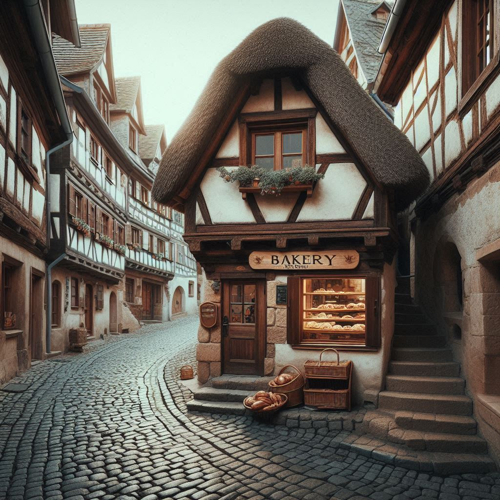

A lendária Padaria da Dona Chica, situada na pitoresca cidade de Patos de Minas, remonta à época medieval, sendo um marco histórico e cultural para a região.
Fundada por Dona Chica, uma mulher visionária e talentosa, a padaria tornou-se rapidamente conhecida por seus pães artesanais e doces irresistíveis, cujas receitas secretas foram passadas de geração em geração.
PANIFICADOS